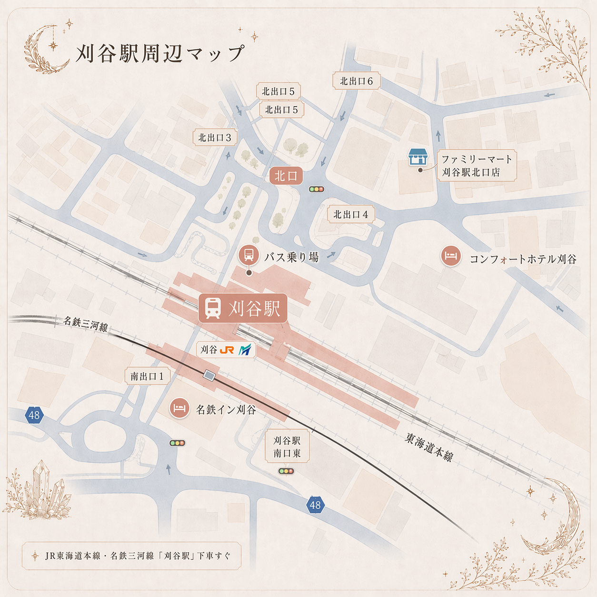
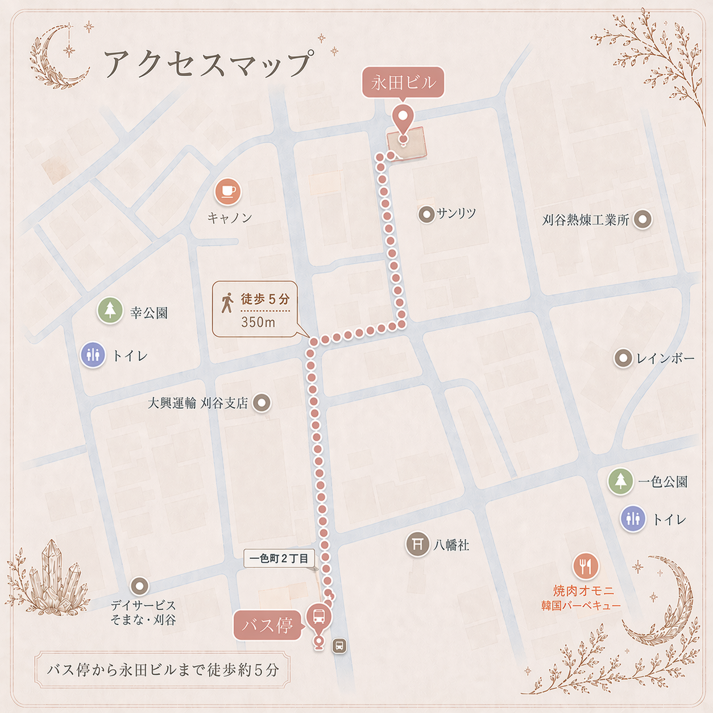

刈谷駅北口から無料バスをご利用の場合
刈谷駅北口から無料バスが出ております。

「刈谷駅北口」バス停留所の情報、および「一色町2丁目」バス停留所の情報をご確認のうえお越しください。
ACCESS
愛知県刈谷市の鑑定室にて、完全予約制で鑑定いたします。
刈谷駅北口から無料バスが出ております。

「刈谷駅北口」バス停留所の情報、および「一色町2丁目」バス停留所の情報をご確認のうえお越しください。
西境線洲原温泉プール行にご乗車頂き、一色町2丁目で下車して下さい。そちらから徒歩5分ほどです。

鑑定は完全予約制です。ご予約時間に余裕をもってお越しください。